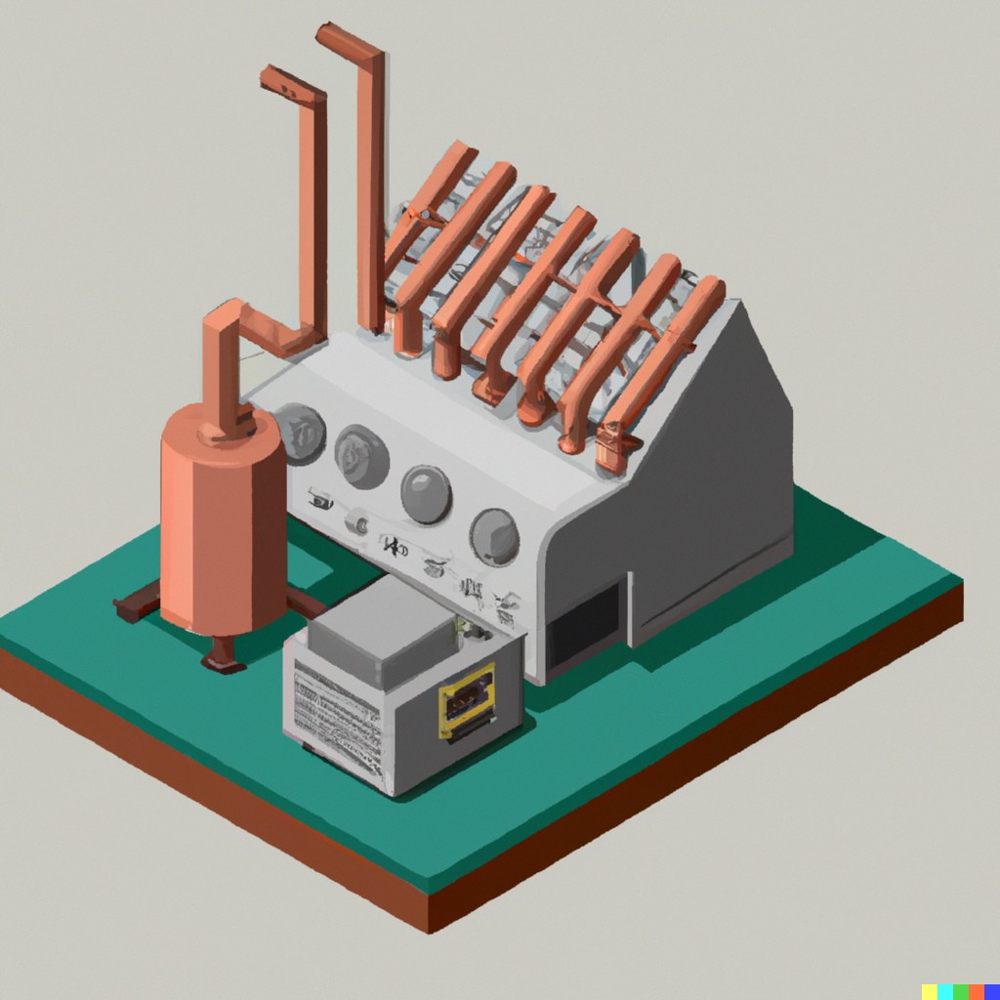
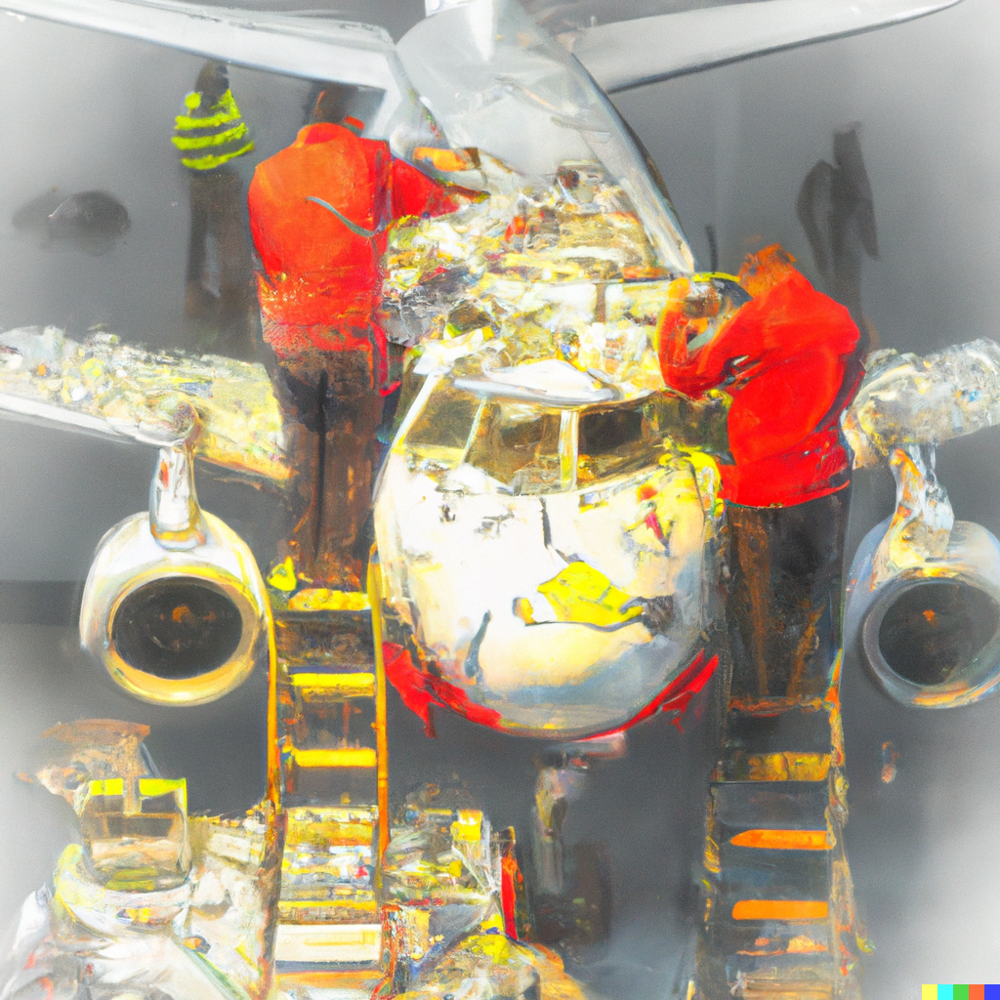
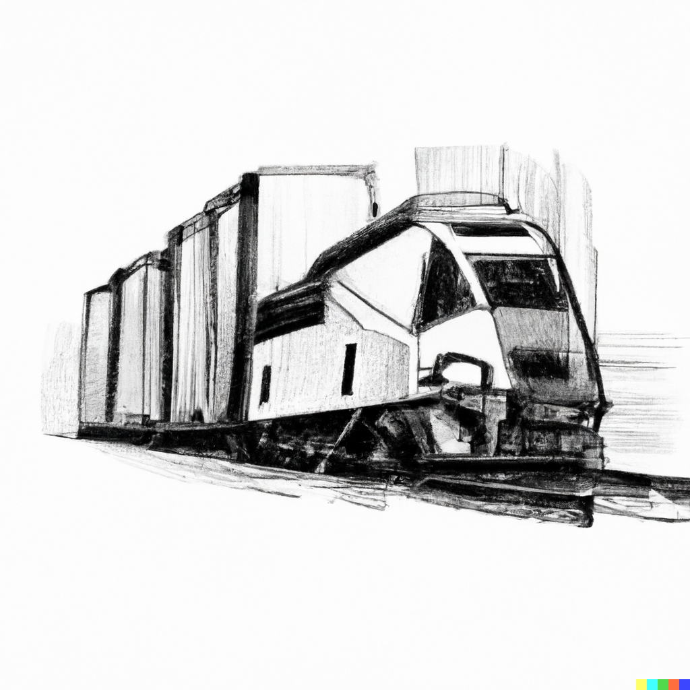
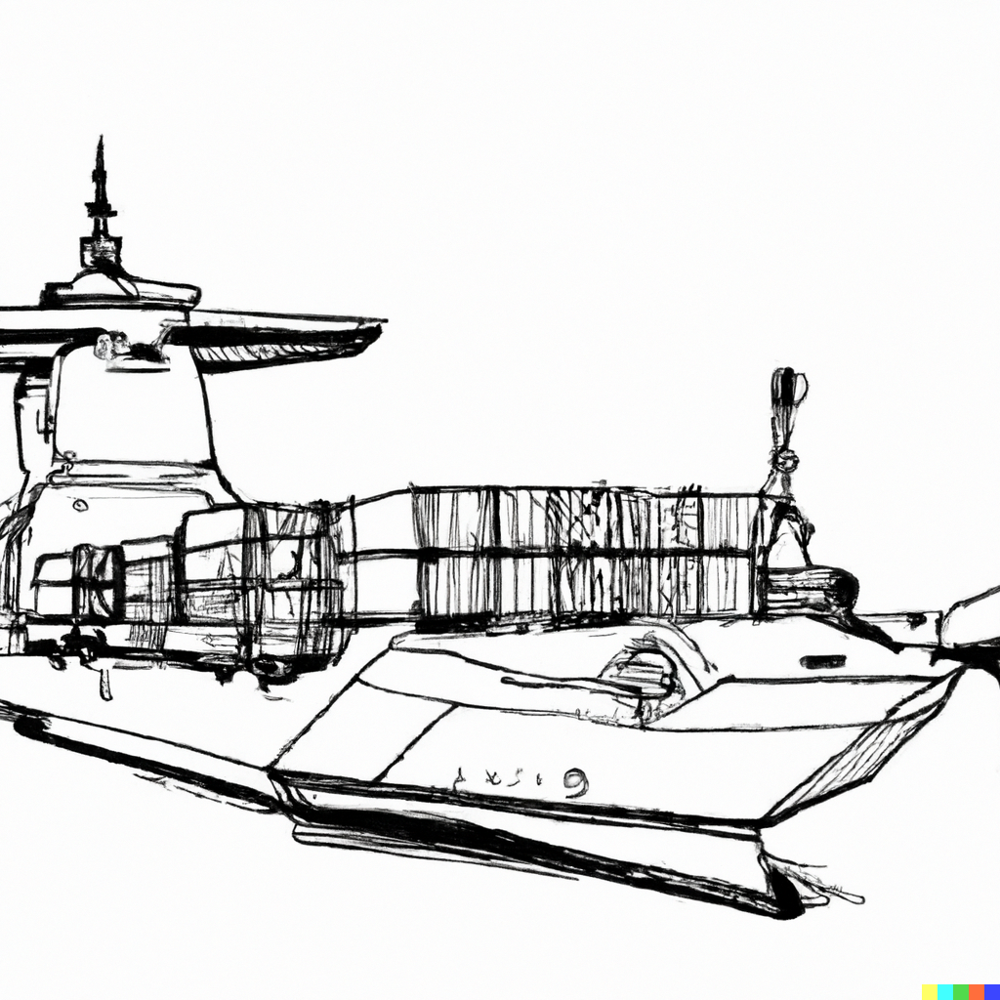
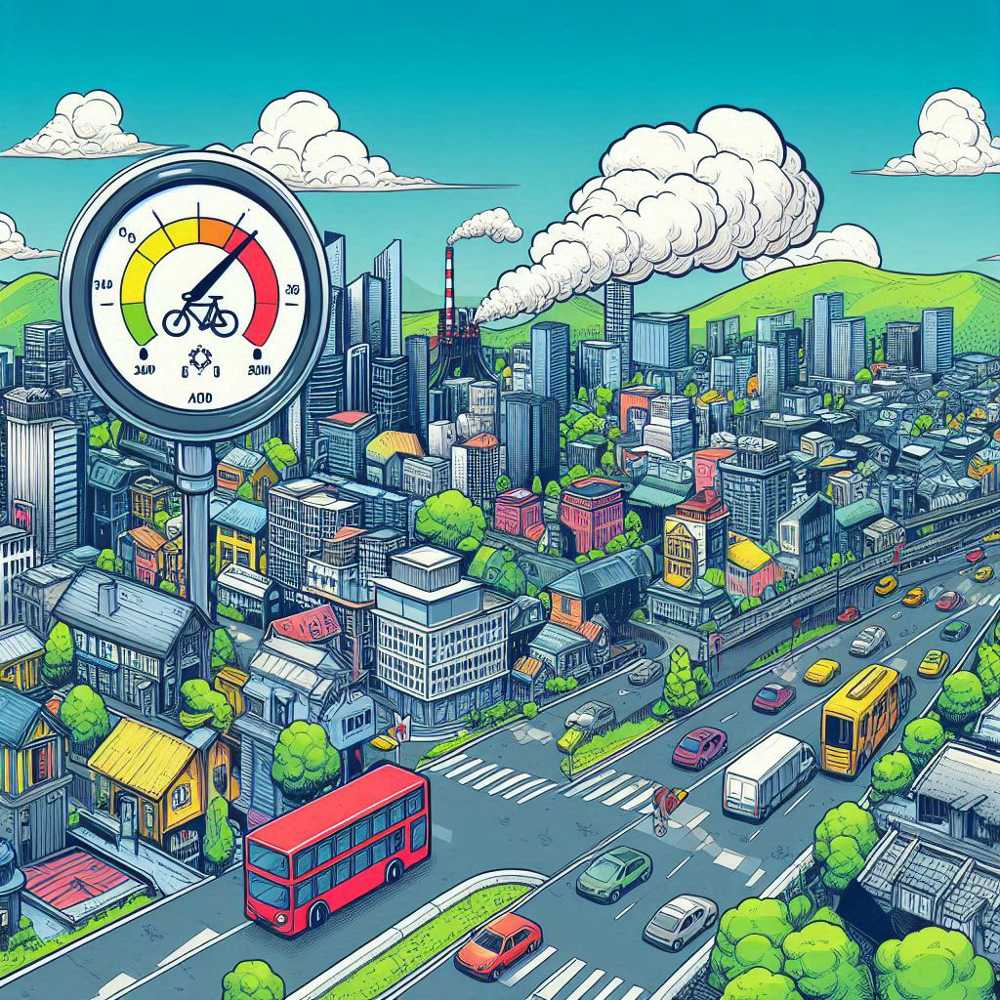

Zukünftige Projekte:

Digitalisierung im Marketing
Personalisierung des Kunden und Social-Media-Analyse in einem E-Commerce-Geschäft. Wie Algorithmen für maschinelles Lernen verwendet, um Modelle zur Kundensegmentierung zu erstellen, die Kunden basierend auf gemeinsamen Merkmalen wie Demografie, Kaufverhalten und Website-Interaktionen gruppieren.
Natural Language Processing (NLP) im Gesundheitswesen
Interpretation von Patientennotizen, Krankenakten und Kundenzufriedenheit zur Bewertung der Kundenerfahrung, Weiterleitung der Patienten an die zuständige Stelle durch Identifizierung von Mustern und Beziehungen zu medizinischen Verfahren und medizinischen Abrechnungen.
Spatio-Temporal Modell für die Integration erneuerbarer Energien und Netzstabilität
Analyse und Simulation des durch E-Mobilität und KI-Technologien verursachten steigenden Energiebedarfs durch die Erstellung eines ganzheitlichen räumlich-zeitlichen Modells, das die Integration erneuerbarer Energien in das Stromnetz darstellt.
Rückverfolgbarkeit von Lebensmitteln mit Blockchain
Nutzung der Blockchain-Technologie, um ein transparentes und sicheres System zur Rückverfolgbarkeit von Lebensmitteln zu schaffen, mit dem die Herkunft von Lebensmitteln und ihr Verbleib innerhalb der Lieferkette mithilfe mathematischer Anwendungen in der Logistik verfolgt werden kann.
Intelligentes Verkehrsmanagementsystem
Verkehrssimulationsmodell, das Verkehrsdaten nutzt, um den Verkehrsfluss in städtischen Gebieten zu optimieren, Staus zu reduzieren, die Pendlerzeiten zu verbessern und das Verständnis für die Bewegungen der Einwohner zur fördern.
HR-Recruiting mit KI
Algorithmen des maschinellen Lernens können zur Analyse von Lebensläufen und anderen Rekrutierungsdaten eingesetzt werden, um die besten Kandidaten für offene Stellen zu identifizieren und durch die Anwendung von Kompetenzanalysen fundierte Einstellungsentscheidungen zu treffen.

Qualitätskontrolle in industriellen Prozessen
Mit Hilfe von Algorithmen des maschinellen Lernens können Daten von verschiedenen Sensoren zur Qualitätskontrolle analysiert werden, um Muster zu erkennen und vorherzusagen, wann Qualitätsprobleme wahrscheinlich auftreten werden.
Ursachenanalyse (Root Cause Analysis)
Algorithmen des macschinellen Lernens können zur Ursachenanalyse eingesetzt werden, um die Grundursache von Verschwendung zu ermitteln und Unternehmen in die Lage zu versetzen, Korrekturmaßnahmen zu ergreifen, um Ineffizienz in einem Verwaltungsumfeld zu verringern.

Leistung der Ausrüstung
Optimierung der Leistung von Schwermaschinen mit Hilfe der vorausschauenden Wartung bei gleichzeitiger Minimierung von Ausfallzeiten und Wartungskosten.
Prozessoptimierung
Optimierung von Fertigungsprozessen, z.B. durch Identifizierung von Engpässen, Verbesserung der Ausbeute und Reduzierung von Abfall.

Netzwerkoptimierung I
Analyse und Lösung verschiedener Transportnetzwerke mit Hilfe verschiedener Optimierungstechniken, wie z.B. Algorithmen für den kürzesten Weg, Minimum Spanning Trees und Maximum Flow Algorithmen.

Netzwerkoptimierung II
Analyse und Lösung verschiedener Transportnetzwerke, die den Seehandel und -betrieb betreffen, durch Anwendung der Warteschlangentheorie.
Lead scoring
Analyze von Kundendaten und Zuweisung von Scores zu Leads auf der Grundlage der Verkaufswahrscheinlichkeit, so dass Vertriebsteams ihre Bemühungen priorisieren und sich auf die vielversprechendsten Leads konzentrieren können.
